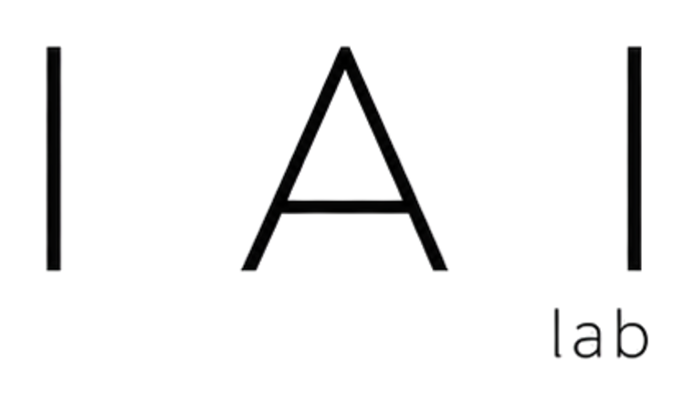

Visual Inspection
Computer vision models for defect detection, surface analysis, measurement, and high-speed quality control.
Manufacturing AI / Automation / Industrial Intelligence

We build production-ready AI systems that help factories see, predict, optimize, and automate complex industrial processes with measurable reliability.

Research Lines
Computer vision models for defect detection, surface analysis, measurement, and high-speed quality control.
Forecasting and anomaly detection for equipment health, process drift, energy use, and downtime risk.
Perception-guided robotic workflows for handling, assembly, inspection, and repeatable shop-floor automation.
Simulation, sensor fusion, and decision models that connect real production data to operational planning.
Platforms
The lab stack combines industrial vision, machine telemetry, edge inference, reproducible simulation, and operator-facing dashboards.
Multi-camera capture, lighting control, defect datasets, and edge inference.
Machine signals, event streams, anomaly models, and production dashboards.
Scenario testing, synthetic data generation, and repeatable industrial benchmarks.
System Pulse
yield.forecast96%
defect.conf94%
cycle.delta0.7%
edge.latency8 ms
Publications & News
Join the Work
We collaborate with researchers, manufacturers, and technology teams working on inspection, predictive maintenance, process optimization, industrial robotics, and factory-scale AI deployment.